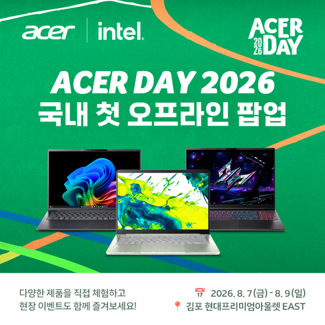

에이서 스위프트 에어 14 국내 첫 공개, 1.19kg
에이서 스위프트 에어 14, 무게가 1.19kg이라면 대체 얼마나 가벼운 걸까요? 그리고 이 노트북은 지금 바로 살 수 있을까요?
에이서코리아가 '에이서 데이 2026' 팝업을 열어요. 8월 7일부터 9일까지, 김포 현대프리미엄아울렛 EAST존이에요. 이 자리에서 신제품 스위프트 에어 14를 국내에서 처음 공개해요.
다만 이 팝업은 제품을 처음 선보이는 공개 행사예요. 정식 판매가 시작되는 출시일은 아니에요. 이 글에서는 이 둘을 구분해서 짚어볼게요.
오늘은 2026년 8월 5일이에요. 공식 발표는 2026년 8월 3일에 나왔어요. 이 글은 그 발표 기준으로 무게·두께·디스플레이 같은 스펙을 정리했어요. 지금까지 확인된 판매 일정도 함께 짚을게요.

에이서가 공개한 '에이서 데이 2026' 팝업 공식 포스터예요.
이미지 출처: 에이서 공식 보도자료(뉴스와이어)
'에이서 데이 2026' 팝업은 언제, 어디서 열리나요
8월 7일부터 9일까지, 김포 현대프리미엄아울렛 EAST존에서 열려요.
에이서코리아가 여는 오프라인 팝업이에요. 스위프트 에어 14와 프레데터 아틀라스 8을 국내에서 처음 공개하는 자리예요.
에이서 데이는 에이서의 대표 브랜드 캠페인이에요. 한국을 포함해 대만·태국·인도네시아 등 아시아 주요국에서 해마다 열려요. 올해는 창립 50주년과 에이서 데이 10주년이 겹치는 해예요. 그래서 'SHIFT THE GAME'을 슬로건으로 내걸었다고 공식 발표는 밝혀요.
| 구분 | 내용 |
|---|---|
| 행사명 | 에이서 데이 2026 팝업 |
| 기간 | 2026년 8월 7일(금) ~ 9일(일) |
| 장소 | 김포 현대프리미엄아울렛 EAST존 |
| 국내 최초 공개 제품 | 스위프트 에어 14, 프레데터 아틀라스 8 |
표: '에이서 데이 2026' 팝업 개요 (에이서 공식 보도자료 기준)
행사 기간에는 방문객 참여 행사도 함께 열려요. 스탬프 투어, 가위바위보 이벤트, 럭키드로우가 마련된다고 공식 발표는 안내해요.
에이서는 1976년 설립된 글로벌 PC 제조사예요. 공식 소개는 PC·디스플레이·프로젝터 등을 만드는 Top5 제조사라고 설명해요. PC 외에도 서버·태블릿·웨어러블 기기까지 생산한다고 소개해요. 전 세계 160여 개국에 진출해 있고, 직원은 7000여 명이라고 밝혀요. 올해는 창립 50주년과 브랜드 캠페인 10주년이 겹치는 해예요. 그래서 국내 최초로 소비자 참여형 오프라인 팝업을 마련했다고 밝혀요.
스위프트 에어 14는 어떤 노트북인가요
인텔 코어 시리즈 3 프로세서를 탑재한 초경량 AI 노트북이에요.
프로세서 코드명은 와일드캣 레이크라고 공식 발표는 밝혀요.
상판부터 팜레스트, 하판까지 전부 알루미늄 소재를 쓴 올메탈 디자인이 특징이에요. 여기에 에이서센스라는 AI 기반 기능도 갖췄다고 공식 발표는 설명해요.
| 항목 | 내용 |
|---|---|
| 프로세서 | 인텔 코어 시리즈 3 (코드명 와일드캣 레이크) |
| 무게 | 약 1.19kg |
| 두께 | 12.9mm |
| 디스플레이 | 14인치 WUXGA, 120Hz |
| 배터리 | 최대 19시간 |
| 디자인 | 상판·팜레스트·하판 전체 알루미늄 올메탈 |
표: 스위프트 에어 14 주요 스펙 (에이서 공식 보도자료 기준, 2026.08.03 발표)
스위프트 에어 14, 스펙에서 특히 강조된 부분은 뭔가요
무게·두께·배터리, 이 세 수치를 에이서가 특히 강조해요.
약 1.19kg, 12.9mm, 최대 19시간이라는 숫자를 공식 발표 본문이 직접 언급해요. 이 수치로 휴대성을 앞세운다고 볼 수 있어요.
- 무게 약 1.19kg — 올메탈 소재로 완성한 무게예요.
- 두께 12.9mm — 슬림한 두께라고 공식 발표는 설명해요.
- 배터리 최대 19시간 — 한 번 충전으로 쓸 수 있는 최대 시간이에요.
다만 이 수치가 전작보다 얼마나 가벼워졌는지는 이번 발표에 없어요. 다른 제조사 제품과의 비교도 마찬가지예요. 그래서 이 글에서는 비교 수치 대신, 에이서가 직접 강조한 숫자만 그대로 전달해요.
제품 단독 사진은 아직 공식 공개 전이에요.
스위프트 에어 14, 가격이랑 정식 출시일은 정해졌나요
아니요, 정확한 가격과 정식 출시일은 이번 발표에 나오지 않았어요.
공식 발표는 '8월 국내 출시를 앞둔 신제품'이라고만 밝혀요. 그래서 구체적인 날짜는 아직 확인되지 않아요.
다만 사전예약 판매 일정은 정해졌어요. 에이서는 8월 1일부터 15일까지 지마켓에서 사전예약 판매를 진행해요. 스위프트 에어 14를 지마켓 단독으로 판매한다고 공식 발표는 밝혀요. 사전예약 구매 고객에게는 최저가 구매 혜택 등 추가 혜택을 준다고 설명해요. 다만 정확한 판매 가격 자체는 이번 발표에 없어요.
| 구분 | 확인된 내용 |
|---|---|
| 사전예약 판매 기간 | 2026년 8월 1일 ~ 15일 |
| 사전예약 판매처 | 지마켓 (단독) |
| 정식 출시일 | 미정 (8월 중 국내 출시 예정이라고만 언급) |
| 가격 | 미정 (이번 발표에 없음) |
표: 스위프트 에어 14 판매 일정 (에이서 공식 보도자료 기준, 2026.08.03 확인)
가격과 정식 출시일은 아직 공식 발표 전이에요. 확인되는 대로 이 글도 업데이트할게요.
자주 묻는 질문
Q. 스위프트 에어 14는 국내에 정식 출시되나요?
네, 정식 출시돼요. 다만 정확한 출시일은 아직 공개되지 않았어요. 8월 국내 출시를 앞두고 있다고만 공식 발표는 밝혀요.
Q. 사전예약은 어디서 하나요?
지마켓에서만 진행돼요. 기간은 2026년 8월 1일부터 15일까지예요. 사전예약 구매 고객에게는 최저가 구매 혜택 등 추가 혜택이 제공된다고 공식 발표는 안내해요.
Q. 팝업 행사에서 실제로 제품을 만져볼 수 있나요?
네, 가능해요. 방문객들에게 출시 전 제품을 직접 체험할 기회를 제공한다고 공식 발표는 밝혀요.
Q. 프레데터 아틀라스 8도 같은 행사에서 공개되나요?
네, 스위프트 에어 14와 함께 국내 최초로 공개돼요. 프레데터 아틀라스 8은 인텔 아크 G3 익스트림 프로세서를 탑재한 게이밍 핸드헬드예요.
참고한 곳
· 에이서 공식 보도자료(뉴스와이어) — '에이서, 에이서 데이 2026 팝업 개최… 신제품 AI PC·UMPC 국내 첫 공개'
하루 정리
· 에이서가 스위프트 에어 14를 8월 7~9일 '에이서 데이 2026' 팝업(김포 현대프리미엄아울렛 EAST존)에서 국내 최초로 공개해요
· 인텔 코어 시리즈 3 프로세서, 약 1.19kg 무게, 12.9mm 두께, 최대 19시간 배터리가 공식 발표가 밝힌 핵심 스펙이에요
· 사전예약 판매는 8월 1일부터 15일까지 지마켓에서만 진행돼요
· 정확한 가격과 정식 출시일은 아직 공개 전이라, 확인되는 대로 업데이트할게요
가벼운 노트북을 기다려 온 분이라면, 팝업 현장에서 먼저 만나보는 것도 방법이겠어요.